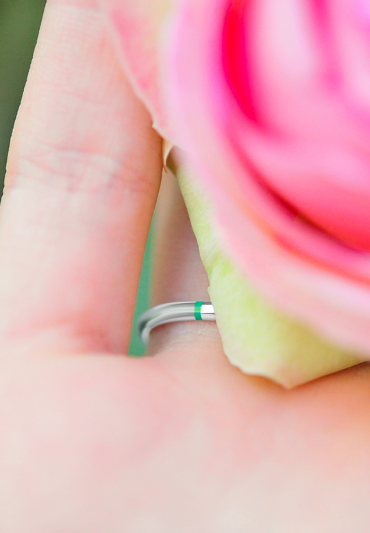

7 avantages du diamant synthétique
Vous envisagez un diamant synthétique pour votre bague de fiançailles ou pour votre prochain bijou surprise? Aujourd’hui, ce diamant de laboratoire est de plus en plus utilisé afin de fabriquer de remarquables bijoux. Pour les joailliers et amateurs de diamants du monde entier, c’est le nouveau visage de l’amour durable. Hormis sa pureté et son prix plus abordable, le diamant cultivé en laboratoire doit sa renommée à de nombreux autres aspects. Voici 7 avantages d’opter pour un diamant de synthèse par rapport à son homologue naturel.
-
Un diamant plus pur et de meilleure qualité Sans impuretés, le
diamant de laboratoire est plus pur que les pierres naturelles
projetées hors de la Terre à l’aide de dynamite et de diesel.
- Il a moins de défauts et montre peu de signes de déformation dans sa structure cristalline, parce qu’il est fabriqué dans des conditions soigneusement contrôlées. Par ailleurs, une meilleure pureté est synonyme de qualité plus appréciable, ainsi que de blancheur et de brillance plus intenses. En fait, la majeure partie des diamants synthétiques reçoivent des indices de pureté plus élevés que leurs homologues naturels.
-
Une pierre précieuse à la source vérifiée Saviez-vous qu’il était
possible de déterminer l’origine exacte de chaque diamant utilisé
pour la confection de bijoux?
- Si vous parlez à des connaisseurs de diamants, la majorité vous dira qu’ils préfèrent connaître avec exactitude le parcours de leur pierre, depuis le moment où celle-ci est extraite jusqu’à son acquisition. Les diamants de synthèse ne proviennent pas de zones en conflit
- Plus de 6 milliards de carats de diamants ont été extraits de la Terre au cours des dernières décennies. Cela s’est majoritairement fait avant la mise en place du Processus de Kimberley en 2003.
- Et depuis, il y a eu des rapports vérifiables de contrebande de diamants hors des zones de conflit et d’importants écarts dans les transactions internationales de diamants. Vous allez même trouver des cas documentés de massacres dans les mines. Souvent appelées « diamants du sang », ces pierres naturelles possèdent un fond sombre et ont souvent été vendues pour financer des conflits armés, ou encore des troubles civils.
- Les diamants provenant de régions plus sereines peuvent porter une histoire tout aussi alarmante que celle des conflits armés. Cela peut être le travail des enfants, les mauvaises conditions de travail et autres violations des droits de l’homme.
- Les diamants de culture ont des origines plus saines et surtout vérifiables Les origines de la plupart des diamants extraits naturellement restent assez floues, vu qu’ils proviennent de régions en conflit.
- Or, un diamant synthétique que vous achetez pour votre fiancée a une histoire propre, sa source est garantie et traçable.
- La production en laboratoire est vérifiée par des acteurs indépendants et toutes les informations sur le diamant de synthèse apparaissent sur le certificat qui l’accompagne. Faisant office de carte d’identité, ce dernier contient des détails précis sur ses caractéristiques.
- Pour ce qui est de la traçabilité, la majorité des laboratoires font une gravure de leur marque sur la gaine de chaque pierre précieuse fabriquée par leurs soins.
-
Le diamant de laboratoire préserve mère Nature À l’inverse du
processus de culture du diamant en laboratoire, l’extraction des
pierres peut considérablement endommager la terre.
- Si vous souhaitez voir l’un des plus grands trous jamais creusés dans la Terre, vous devriez visiter une mine de diamants. Ces endroits nécessitent en effet d’immenses quantités de combustibles fossiles et de machines lourdes pour extraire les pierres précieuses.
- Deuxième plus grand trou de la Terre, la mine de diamants Mirny mesure par exemple près de 1,5 km de diamètre et 525 m de profondeur. Les inconvénients de tels sites vont bien au-delà d’un vaste fossé dans le sol pour s’étendre aux dommages dans les cours d’eau et les écosystèmes.
- Une seule mine de diamants peut nécessiter l’abattage de 400 000 arbres et la destruction d’un coin de vis tranquille pour les animaux. Comparé aux joyaux qui ont pu y voir le jour, un diamant de laboratoire est qualifié de responsable.
-
La production de diamants de culture exploite l’énergie renouvelable
Alors que la production des diamants synthétiques devient de plus en
plus écologique, l’extraction de leur homologue évolue en sens
inverse. De nombreux producteurs de diamants se servent déjà
d’énergies renouvelables dans leurs laboratoires.
- Plusieurs installations de culture de pierres précieuses sont en construction dans des zones où l’énergie renouvelable est à portée de main. Les diamants de laboratoire offrent une excellente option pour toutes les personnes impliquées, y compris le fabricant, l’acheteur, le fournisseur et la planète en général. Le fait est que la demande de la pierre brillante croît sans cesse, tandis que l’offre de diamants naturels diminue. Il est donc beaucoup plus écologique de passer à la culture des pierres synthétiques pour répondre efficacement à cet écart.
- De gros diamants synthétiques à des prix plus abordables En dehors du fait que les diamants de laboratoire ne causent que peu ou pas de dommages à l’environnement, ils sont également plus abordables. Aujourd’hui, ces derniers sont 20 à 40% moins chers que les pierres extraites de qualité comparable. Ceci parce que la chaîne d’approvisionnement des diamants de laboratoire est beaucoup plus efficace et que les bénéfices des sociétés d’extraction sont assez importants. Vous pouvez donc acheter de brillantes pierres synthétiques de meilleure qualité, et ce pour un meilleur prix. Il est par exemple possible de trouver un magnifique diamant synthétique de 2,0 à 2,5 carats pour environ le prix d’une bague de fiançailles de 1,5 carat dans une bijouterie de luxe.
- La pierre brillante a de nombreux autres usages Lorsque vous achetez des bijoux avec du diamant de laboratoire, vous investissez en quelque sorte dans l’avenir de l’humanité. Car votre geste soutient directement la Recherche et le Développement (R&D) de diverses technologies de pointe. Ces dernières concernent les domaines comme les médicaments, l’informatique, la fabrication, les sciences de matériaux et l’énergie renouvelable. Eh oui, les principaux producteurs de diamants synthétiques font activement ce travail à des fins autres que les pierres précieuses. Les revenus obtenus sont ensuite généralement utilisés pour financer les efforts de R&D et augmenter la capacité de production. Ainsi, en faisant le choix conscient du diamant synthétique, vous contribuez aussi à la conception de meilleurs couteaux chirurgicaux, des véhicules électriques à chargement plus rapide et de procédés de purification d’eau plus efficaces. Les enclumes haute pression, les semi-conducteurs plus rapides, l’énergie solaire, les LED et lasers plus puissants ne sont pas en reste.
- De nombreuses couleurs fantaisie au choix